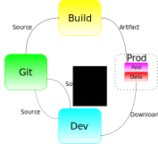

Building a cloud-friendly application
Larry Garfield
@Crell

- Director of DX, Platform.sh
- PHP-FIG Core Committee
implements Huggable
 (Source: @bassamtabbara)
(Source: @bassamtabbara)
computing?
The Cloud?
These are separate questions...
The Cloud™: noun
Someone else's hard drive
Cloud computing: noun
Abstracting away physical infrastructure
Disposable application design
What makes an application
cloud-friendly?
They're not rules

They're more like guidelines
Split code from content
Code
- Provided by developer
- Carefully tested
- Lives in version control
- Read-only runtime
Content
- Provided by users
- Frequently ad hoc
- Lives in DB or filesystem
- Writeable runtime
Your application is disposable.
Your data is not.
Data flow
You don't get an in-between option
Take-away
Cleanly separate "Dev provided" and "user provided" files
What is configuration?
Does config come from the developer or the user?
Git or Database?
Drupal Config Management
- Configure in UI / DB
- Export to YAML
- Commit to Git
- Push / Pull
- Import back to DB
Take-away
Decide
What happens at runtime
stays at runtime
Dependency inject your environment
- DB credentials (Solr, Redis, etc.)
- API keys
- All paths on disk
- Domain names
Environment variables
getenv('foo');
$_ENV['foo'];
$_ENV['foo']['bar'];
Only ever use getenv()
Need glue code

Platform.sh
Symfony 3
// platform_parameters.php
// Configure the database.
if (getenv('PLATFORM_RELATIONSHIPS')) {
$dbRelationshipName = 'database';
$relationships = json_decode(base64_decode(getenv('PLATFORM_RELATIONSHIPS')), true);
foreach ($relationships[$dbRelationshipName] as $endpoint) {
if (!empty($endpoint['query']['is_master'])) {
$container->setParameter('database_driver', 'pdo_'.$endpoint['scheme']);
$container->setParameter('database_host', $endpoint['host']);
$container->setParameter('database_port', $endpoint['port']);
$container->setParameter('database_name', $endpoint['path']);
$container->setParameter('database_user', $endpoint['username']);
$container->setParameter('database_password', $endpoint['password']);
$container->setParameter('database_path', '');
break;
}
}
}
// Set a default unique secret, based on a project-specific entropy value.
if (getenv('PLATFORM_PROJECT_ENTROPY')) {
$container->setParameter('kernel.secret', getenv('PLATFORM_PROJECT_ENTROPY'));
}
Platform.sh / Symfony 4
composer require platformsh/symfonyflex-bridge
mapPlatformShEnvironment();
function mapPlatformShEnvironment() : void
{
if (!getenv('PLATFORM_APPLICATION')) {
return;
}
$secret = getenv('APP_SECRET') ?: getenv('PLATFORM_PROJECT_ENTROPY') ?: null;
setEnvVar('APP_SECRET', $secret);
$appEnv = getenv('APP_ENV') ?: 'prod';
setEnvVar('APP_ENV', $appEnv);
if (!getenv('DATABASE_URL')) {
mapPlatformShDatabase();
}
}
// ...
Platform.sh / Laravel
composer require platformsh/laravel-bridge
mapPlatformShEnvironment();
function mapPlatformShEnvironment() : void
{
if (!getenv('PLATFORM_APPLICATION')) {
return;
}
mapAppUrl();
$secret = getenv('APP_KEY') ?: getenv('PLATFORM_PROJECT_ENTROPY') ?: null;
setEnvVar('APP_KEY', $secret);
$secure_cookie = getenv('SESSION_SECURE_COOKIE') ?: 1;
setEnvVar('SESSION_SECURE_COOKIE', $secure_cookie);
if (getenv('PLATFORM_RELATIONSHIPS')) {
$relationships = json_decode(base64_decode(getenv('PLATFORM_RELATIONSHIPS'), true), true);
mapPlatformShDatabase('database', $relationships);
mapPlatformShRedisCache('rediscache', $relationships);
mapPlatformShRedisSession('redissession', $relationships);
}
}
// ...
Glue of last resort
composer.json
{
"autoload": {
"files": ["extra-bridge.php"]
}
}
Only works if your app reads env vars...
Use DotEnv
(PHP has several... because PHP)
Symfony\HttpFoundation
Request::setTrustedHosts()
Constants?
Take-away
Dependency inject your environment
User-configured connections
Installers
- Ask for DB credentials
- Ask user for basic site info
- Write credentials to config file
- Populate DB
- Write basic site info to config file/DB
- Profit!!!
Cloud
Better installers
- Pre-include connection glue
- Installer skips pre-populated values
- Do not download from installer
Avoid lock-in
Always be able to
take your business elsewhere.
Use Free Software
Use replaceable services
Google has killed...
- Reader
- iGoogle
- Google Talk
- Google Health
- Knol
- Google Insights
- Picnik
- Buzz
- Aardvark
- Sidewiki
- Notebook
- Dictionary
- Labs
- Wave
- SearchWiki
- Dodgeball
- Jaiku
- Lively
- Page Creator
- Plus
- Zeitgeist
- Answers
- Google X
- Catalog
- Web Accelerator
- Video Player
- Sets
- SearchMash
- Writely
- Plus+
Source: WordStream (2015)
Safe
- MySQL/MariaDB
- PostgreSQL
- RabbitMQ
- Solr/Elasticsearch
- InfluxDB
Unsafe
- Amazon RDS
- Amazon DynamoDB
- Azure Cosmos DB
- Anything you can't replace in a day
Microservices: Threat or menace
What is a microservice?
There is no industry consensus yet regarding the properties of microservices, and an official definition is missing as well.
Properties of microservice design
- Single-purpose components
- Dumb pipes (HTTP, IPC, etc.)
- Separate teams
- Independent releases
(Sources: Wikipedia, Martin Fowler)
Every microservice treats every other microservice as a separate 3rd party
that may as well be a different company.
Benefits
- Different tools/languages
- Small, focused, interdisiplinary teams
- Strong separation of concerns
- Scale/evolve/replace separately
Any organization that designs a system (defined broadly) will produce a design whose structure is a copy of the organization's communication structure.
Drawbacks
- Network latency
- Network points of failure (plural)
- Transitioning code is 10x harder
- API versioning
- More staff needed
- PHP startup time
"If one of your microservices going down means the others don't work, you don't have a microservice; you have a distributed monolith."
—A few dozen people
So if microservices aren't for me, what is?
Clustered applications
Clustered applications
- Single team
- Discrete components
- Deploys as once
- Usually one language (not required)
- May share datastores
You've probably already done this
Clustered applications
Cron jobs
"Admin" application
Queue workers
API app
All asynchronous
To summarize...
Remember what they say when you assume
Larry Garfield
@Crell
Director of Developer Experience Platform.sh
Idea to Cloud Hosting
Stalk us at @PlatformSH